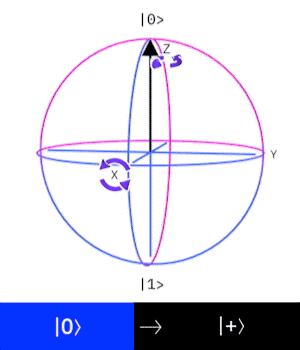

class: center, middle # Algoritmo de Deutsch-Jozsa --- # El problema de Deutsch-Jozsa ***Definición 1:*** Sea \\(f : \\{0, 1\\}^{n} \to \\{0, 1\\}\\) una función. Decimos que \\(f\\) es balanceada si para la mitad de su dominio \\(f\\) evaluá en \\(0\\) y para la otra mitad evaluá en \\(1\\). -- - En el problema de Deutsch-Jozsa queremos saber si una función es balanceada o constante. Esto es, construir un algoritmo que reciba como argumento la función y decida si esta es balanceada o constante. -- - El caso particular para \\(n = 1\\) lo llamamos el problema de Deutsch. --- # Solución clásica al problema de Deutsch Solución usando python: ```python def balanceada(f): """Devuelve True si f es una función balanceada, en otro caso devuelve False""" if f(0) == f(1): return False return True ``` -- - Mirando la complejidad de esta algoritmo, sin tener en cuenta la implementación de \\(f\\), tenemos que se debe computar DOS veces \\(f\\); una para \\(f(0)\\) y otra para \\(f(1)\\). -- - ¿Existe un algoritmo que no requiera computar dos veces \\(f\\)? --- # Operador Pauli-X El operador de Pauli-X, denotado como \\( \sigma_{1} \\) o \\( X \\), es la transformación representada por la siguiente matriz, respecto a la base computacional. \begin{equation} X = \begin{bmatrix} 0 & 1 \\\ 1 & 0 \end{bmatrix} \end{equation} -- - O en notación de Dirac $$ X = | 1 \rangle \langle 0 | + | 0 \rangle \langle 1 |$$ -- - Si fuera una compuerta clásica, su interpretación sera la compuerta NOT. Pues: $$ X | 0 \rangle = | 1 \rangle$$ $$ X | 1 \rangle = | 0 \rangle$$ -- - Sin embargo este operador es unitario y por tanto una mejor interpretación es de una rotación de \\(\pi \\) al rededor del eje X, en la esfera de Bloch. --- # Operador Pauli-X - Animación de \\(X \\) actuando sobre \\( |0 \rangle \\) en la esfera de Bloch. <center> <figure> <img src="../../images/slides/X_Bloch.gif" width="200"> <figcaption><font size="3"><i>Cortesía de IBM</i></font></figcaption> </figure> </center> --- # Operador X-Controlado X-Controlado es el operador Pauli-X sujeto a una condición, dada por otro qubit. Por tanto es un operador en \\( \mathbb{H} \otimes \mathbb{H} \\). -- - Actuá de la siguiente manera. $$ CX | 0 \rangle | 0 \rangle = | 0 \rangle | 0 \rangle$$ $$ CX | 0 \rangle | 1 \rangle = | 0 \rangle | 1 \rangle$$ $$ CX | 1 \rangle | 0 \rangle = | 1 \rangle | 1 \rangle$$ $$ CX | 1 \rangle | 1 \rangle = | 1 \rangle | 0 \rangle$$ -- - Nos podemos dar cuenta de que es similar a la compuerta clásica CNOT. Y de igual manera que en CNOT al primer qubit se le llama qubit de control. -- - Observe que el qubit de control puede estar en un estado superpuesto, haciendo de este un operador un poco mas complicado que su análogo clásico. --- # Operador de Hadamard El operador de Hadamard, denotado como \\( H \\), no confundir con la hamiltoniana, es la transformación representada por la siguiente matriz, respecto a la base computacional. \begin{equation} H = \begin{bmatrix} \frac{1}{\sqrt{2}} & \frac{1}{\sqrt{2}} \\\ \frac{1}{\sqrt{2}} & -\frac{1}{\sqrt{2}} \end{bmatrix} \end{equation} -- - O en notación de Dirac $$ H = \frac{1}{\sqrt{2}} ( |0 \rangle + | 1 \rangle ) \langle 0 | + \frac{1}{\sqrt{2}} ( |0 \rangle - | 1 \rangle ) \langle 1 |$$ -- - No tiene un análogo en las compuertas clásicas. Sin embargo este actuá de la siguiente forma. $$ H |0 \rangle = \frac{1}{\sqrt{2}} ( |0 \rangle + | 1 \rangle ) = |+\rangle $$ $$ H |1 \rangle = \frac{1}{\sqrt{2}} ( |0 \rangle - | 1 \rangle ) = |-\rangle $$ --- # Operador de Hadamard - Como es unitario, también se puede ver como una rotación de \\( \frac{\pi}{2} \\) respecto al eje X y al eje Z en la esfera de Bloch. -- - Animación de \\(H \\) actuando sobre \\( |0 \rangle \\) en la esfera de Bloch. <center> <figure>  <figcaption><font size="3"><i>Cortesía de IBM</i></font></figcaption> </figure> </center> --- # Operador Pauli-Z El operador de Pauli-Z, denotado como \\( \sigma_{3} \\) o \\( Z \\), es la transformación representada por la siguiente matriz, respecto a la base computacional. \begin{equation} Z = \begin{bmatrix} 1 & 0 \\\ 0 & -1 \end{bmatrix} \end{equation} -- - O en notación de Dirac $$ Z = | 0 \rangle \langle 0 | - | 1 \rangle \langle 1 |$$ -- - No tiene un análogo en las compuertas clásicas. Sin embargo este actuá de la siguiente forma. $$ Z |0 \rangle = | 0 \rangle $$ $$ Z |1 \rangle = -| 1 \rangle $$ -- - Y de igual manera este operador también se puede ver como una rotación de \\(\pi \\) al rededor del eje Z, en la esfera de Bloch. --- # Operador Pauli-Z - Animación de \\(Z \\) actuando sobre \\( |+ \rangle \\) en la esfera de Bloch. <center> <figure> <figcaption><font size="3"><i>Cortesía de IBM</i></font></figcaption> </figure> </center> --- # Operador Pauli-Z - La importancia de este operador radica en que las medidas se realizan respecto a este. Esto se le dice una medida-Z. -- - Como la descomposición espectral de Pauli-Z es: $$ Z = | 0 \rangle \langle 0 | - | 1 \rangle \langle 1 |$$ Se puede ver que la base computacional que usamos está respecto a la base de autoestados de Pauli-Z. -- - En qiskit nuestras medidas siempre se realizan respecto a Pauli-Z. -- - Hay que tener en cuenta que cualquier medida se puede hacer respecto a cualquier observable, pero estas medidas nos dan respecto a la base de autoestados de ese operador. -- - Para que un operador \\( \mathcal{X} \\) cualquiera tenga la misma base de autoestados de Pauli-Z es necesario y suficiente que se cumpla \\( [\mathcal{X}, Z] = 0 \\). --- # Algoritmo de Deutsch Como se dijo al principio, para probar si una función es constante o balanceada es mas que suficiente mirar si cumple \\( f(0) = f(1) \\) esta condición equivale a ver si \\( f(0) \oplus f(1) \\) es igual a \\(1\\) o \\(0\\), donde \\( \oplus \\) es la suma en \\( \mathbb{Z}/2\mathbb{Z} \\). -- - Para construir el circuito cuántico que soluciona el problema de Deutsch, necesitamos las compuertas Pauli-X, Hadamard y Pauli-Z. -- - - Se tienen dos qubit. El primero esta en \\( |0 \rangle \\) y el segundo \\(|1 \rangle \\). -- - - Aplicamos Hadamard a ambos qubits. Este paso se le llama preparar los qubits. -- - - Se construye un operador unitario que contiene la información sobre \\(f \\), a este operador le decimos un oráculo, pues no conocemos su implementación a priori. El operador unitario actuá en la base de \\(\mathbb{H} \otimes \mathbb{H} \\) de la siguiente forma: $$U| x \rangle | y \rangle = | x \rangle | f(x) \oplus y \rangle$$ Con \\( x, y \in \\{ 0, 1\\}\\). --- # Algoritmo de Deutsch - - Luego aplicamos Hadamard al primer qubit. -- - - Realizamos una medida-Z en el primer qubit. -- - - Si \\(f\\) es balanceada medimos \\(|0\rangle\\), en el otro caso medimos \\(|1\rangle\\). -- - El circuito en qiskit asociado es: <center> <figure> <figcaption><font size="3"><i>Cortesía de IBM</i></font></figcaption> </figure> </center> --- # Algoritmo de Deutsch ¿Por qué funciona? El núcleo de la solución es el operador \\( U| x \rangle | y \rangle = | x \rangle | f(x) \oplus y \rangle \\) este operador actuá una sola vez sobre el estado superpuesto entre el qubit uno y el qubit dos. Haciendo que la operación para saber si \\(f\\) es balanceada o constante sea de una sola aplicación de \\( f \\), o sea \\( U \\), a diferencia de la versión en python que computaba dos veces \\(f \\). -- Como aplicamos Hadamard al primer y segundo qubit, se parte del estado: $$\frac{1}{2} (|0 \rangle + |1 \rangle)(|0 \rangle - |1 \rangle)$$ -- Y ha este estado aplicamos \\( U \\). -- Resolviendo: $$ U(\frac{1}{2} (|0 \rangle + |1 \rangle)(|0 \rangle - |1 \rangle)) = \frac{(-1)^{f(0)}}{2}(|0\rangle + (-1)^{f(0) \oplus f(1)}|1\rangle)(|0 \rangle - |1 \rangle) $$ --- # Algoritmo de Deutsch Tomamos el estado \\( \frac{1}{\sqrt{2}} (|0\rangle + (-1)^{f(0) \oplus f(1)}|1\rangle) \\) y aplicamos una vez mas hadamard, lo cual nos da: $$| \psi \rangle = \frac{1}{2}( (1 + (-1)^{f(0) \oplus f(1)})|0 \rangle + (1 - (-1)^{f(0) \oplus f(1)})|1 \rangle ) $$ -- Podemos ver que si \\( f(0) \oplus f(1) = 0\\) por tanto \\( |\psi\rangle = |0\rangle \\), en el otro caso, \\( f(0) \oplus f(1) = 1\\) por tanto \\( |\psi\rangle = |1\rangle \\). -- De esta manera siempre que hagamos una medida respecto a la base computacional, obtendremos el \\( 100\\)% de las veces la solución al problema de Deutsch. --- # Implementación en Qiskit Como vimos anteriormente el circuito en qiskit es: <center> <figure> <figcaption><font size="3"><i>Cortesía de IBM</i></font></figcaption> </figure> </center> Por tanto solo queda implementar un oráculo de \\(f \\). -- - Si \\( f \\) es una función constante evaluada a 0, basta tomar \\(U = I\\), o sea la identidad de \\(\mathbb{H}\otimes \mathbb{H}\\). -- - Si \\( f \\) es una función balanceada equivalente a la función identidad de \\(\\{ 0, 1\\} \\), basta tomar \\(U = \text{X-Controlado} \\). --- # Para pensar - ¿Cual sería la implementación de \\( U \\) cuando \\( f \\) es constante a \\(1\\)? -- - ¿Y cuando \\(f \\) es balanceada equivalente al operador NOT? -- - ¿Se puede optimizar mas el algoritmo mostrado, se puede hacer en un solo qubit?, en caso afirmativo: ¿Puede escribir los respectivos circuitos cuánticos para los cuatro casos de \\(f \\)?, y en caso negativo: ¿Por qué no? --- class: center, middle Esta diapositiva se encuentra en: http://astra-fox.github.io/documents/slides/ES-deutsch.html --- # Bibliografía - A. Barenco, C.H. Bennett, R. Cleve, D.P. DiVincenzo, N. Margolus, P. Shor, T. Sleator, J. Smolin, H. Weinfurter. *Elementary gates for quantum computation*. Phys.Rev. A. **52** (1995), 3457. - Michael A. Nielsen and Isaac L. Chuang. *Quantum Computation and Quantum Information*. Cambridge University Press, New York, 2010. - D. Deutsch. *Quantum Theory, the Church-Turing Principle and the Universal Quantum Computer*. Proc. R. Soc. A. **400** (1985), 1818, 97-117.